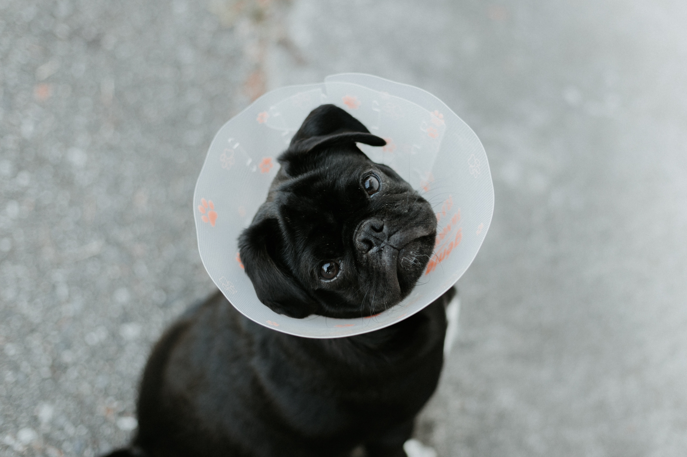
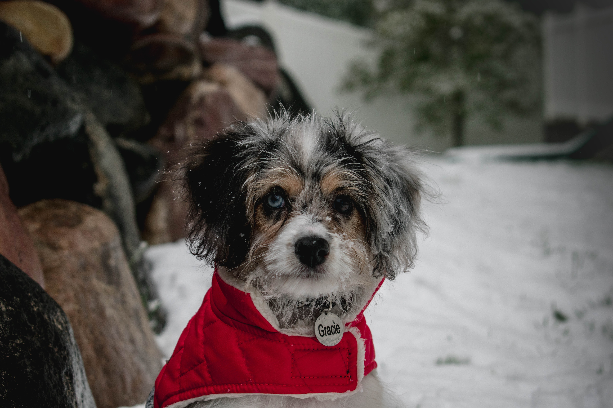

Cuidados básico para mascotas
Cada mascota es distinta, pero debemos seguir una serie de cuidados básicos para que nuestra mascota tenga una vida plena y saludable
Protección
Dale un lugar seguro donde resguardarse del frio y calor.

Alimentación
Los avances en este campo son increíbles, puedes encontrar un producto muy especializado en las características de tu animal. Los de perro y gato están clasificados en húmedos o secos, según el tipo de pelo, según la edad del animal, específicos para una enfermedad, para hacer dieta, si está esterilizado o no, etc.

Limpieza
Debes mantenerlo limpio, libre de pulgas y garrapatas. Debes bañar a tu perro cada 15 días con jabón especial y a los gatos es necesario cepillarlos para quitarles el polvo y pelo suelto. Mantén también limpia el área donde habita.

Salud
Lleva a tu perro o gato al médico cuando observes que no actúa normal. Mantén su cuadro de vacunación y desparasitación siempre al corriente.
No le des remedios caseros ni medicina de humanos.
Esterilización
Como sociedad, tenemos la responsabilidad de que los animales de compañía tengan una posibilidad real de encontrar un hogar con personas responsables, capaces de brindarles una vida digna; precisamente por esta razón debemos evitar el nacimiento de aquellos no deseados, que de lo contrario terminarán por ser sacrificados, maltratados o abandonados. Lleva a tu mascota a esterilizar.

Ejercicio
Los perros y gatos necesitan ejercicio esto ayuda a gastar energía y hacer menos destrozos. Lleva tu perro a pasear con correa diariamente. No olvides recoger su popó con una bolsita y tirarla a la basura para evitar contaminación.

Entrenamiento
Los perros y gatos pueden aprender si los educamos con amor, constancia y paciencia.
NO con gritos ni golpes. Las acciones premiadas las repiten: Dales un premio o palabras amables cuando hagan algo bueno. Dales un juguete adecuado para que se mantengan ocupados cuando estén solos.

Identificación
Toda mascota debe portar una placa de identificación con su nombre y teléfono de su dueño, esta simple acción puede salvar su vida.
